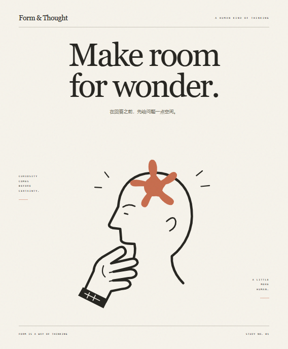
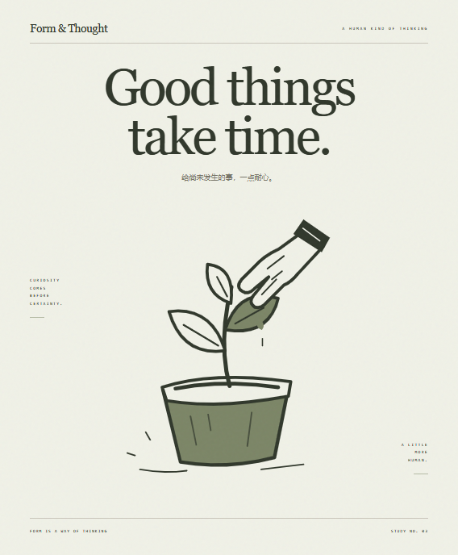

A LITTLE HUMAN. A LITTLE UNEXPECTED.
一种语言，
不止一种表达。
从一幅有温度的插画，到一篇值得细读的文章。
六种具体的隐喻，三种可以操作的网页。
让这套视觉语言，真正走进你的作品。


01 / FROM LANGUAGE TO EXPERIENCE
同样的气质，不同的用途。
点击进入真实页面。所有示例在本地运行，按钮连接实际状态与导出。
02 / SIX WAYS OF MAKING SENSE
让想法，有可辨认的形状。
思考、书写、生长、灵感、阅读与对话。下载可编辑海报，或单独取用插画路径。


轮到你的那个想法了。
换一种配色，写一句自己的话，把它带走。